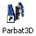
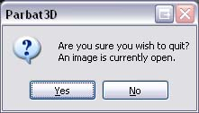

To start Parbat3D, double click on Parbat3D.exe
This will launch the main window, which is known as the overview window.

Currently no image is open so the window should say "No Image Loaded". An image can now be opened by clicking on the "File" menu and scrolling down to "Open Image...".

Parbat3D is now ready for work.
If an image is open then it must first be closed before the application is exited. To do this, click on the "File" menu and scroll down to "Close Image"
This should close whatever image was open and close all the windows apart from the overview window. The overview window should now show that no image is open with a black background and the text "No Image Loaded".
Parbat3D can now be exited by opening the "File" menu and selecting "Exit". This should close the overview window.
Parbat3D will now have been exited successfully.
Parbat3D may be closed with an image open with no ill effects. To do this, open the "File" menu and select "Exit" from the menu.
There should now be a prompt reminding you that an image is still open and checking if you really want to quit. Select "Yes" in the prompt and Parbat3D should first close the image then exit.
By clicking "No" in the prompt, Parbat3D will return to the image and allow you to continue work.
